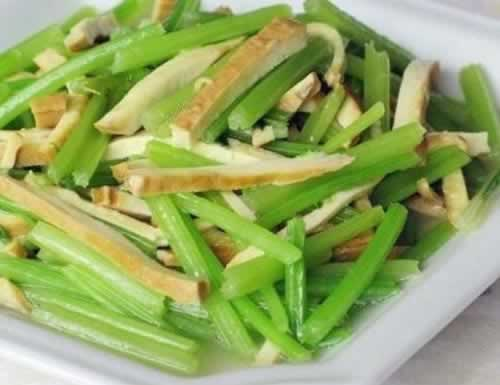

调整饮食预防妊娠期高血压
妊娠高血压综合征，是会严重影响母婴安全的常见疾病，简称“妊高征”，会导致准妈妈发生肾功能障碍、胎盘早剥以及胎儿宫内发育迟缓、胎儿窘迫等并发症，严重地威胁着母体与胎儿的生命安全。所以，做好预防工作是必需的。那么准妈妈在日常饮食中，如何预防妊娠期高血压发生呢？
1、适度摄取盐：盐摄入过多，容易导致水钠潴留（由钠离子潴留细胞外而引起的水肿），会使孕妈咪血压升高，所以一定要控制盐的摄入量。一般建议孕妈咪每天食盐的摄入量应少于5克，酱油也不能摄入过多，6毫升酱油约等于1克盐的量。
2、控制热能和体重：孕期能量摄入过高，容易导致肥胖，而肥胖是妊娠高血压的一个重要危险因素，所以孕期要适当控制食物的量，特别是孕前超重的孕妈咪，孕妈咪整个孕期以不超过12公斤为宜。
3、减少摄入饱和脂肪：少吃动物性脂肪，而以植物油代之，每天烹饪用油大约20克。
4、防止蛋白质摄入不足：禽类、鱼类蛋白质可调节或降低血压，大豆中的蛋白质可保护心血管。因此，多吃鱼类、禽类和大豆类可改善孕期血压。
5、保证钙的摄入量：准妈妈要保证每天喝一袋牛奶，牛奶和奶制品含丰富而易吸收的钙质，是补钙的良好食物，以低脂或脱脂的奶制品为宜。孕妇增加乳制品的摄入量可减少妊娠高血压的发生。
6、搭配丰富的蔬菜和水果：保证每天摄入蔬菜500克以上，水果200-400克，多种蔬菜和水果搭配食用。因为蔬菜和水果可以增加食物纤维素的摄入，对防止便秘，降低血脂有益，还可补充多种维生素和矿物质，有利于妊娠高血压的防治。
本周推荐尝试食谱1：
芹菜香干
推荐理由：清爽可口，味道鲜美，含芹菜素、胡萝卜素、维生素C、磷、铁等成分，适合孕妇食用。
食谱原料：
水芹菜一颗，豆腐干3-4片，玉米油、精盐、鸡精、五香粉各少许。
制作方法：
1、香干洗干净切丝待用。
2、芹菜叶子去掉，切段洗干净。
3、锅中烧水，水烧开加点盐和点油把芹菜倒入锅中焯水，水开后就可以捞出来了。这样焯水使芹菜颜色比较漂亮而且都提出蔬菜里的鲜度。
4、锅中底油，放葱花，姜片爆香一下，我家里的姜片没有了^_^。倒入香干，加点盐，酱油爆炒一下。
5、倒入焯过水的芹菜，加点盐爆炒一下。时间不要炒的太长，因为芹菜已经焯过水了，大火炒个2到3分钟，加点鸡精就可以起锅了。
本周推荐尝试食谱2：
过桥豆腐
推荐理由：豆腐能补脾益胃、清热解毒、利小便，适宜怀孕妇女食用。
食谱原料：
猪肉馅150克，南豆腐半块，鸡蛋黄4个，剁椒1大勺，食盐1茶勺，酱油2大勺，香油少许，鸡精2茶勺，小葱1大勺，五香粉少许，淀粉1大勺。
制作方法：
1、肉馅加入葱末、盐、1大勺酱油、鸡精、五香粉、香油、干淀粉拌匀。
2、将拌好的肉馅放入圆盘中间，整成小山型。
3、将豆腐切薄片码在肉馅四周。
4、把蛋黄放入缝隙中。
5、将剁椒、1大勺酱油、鸡精放入碗中调匀，淋在豆腐上。
6、将豆腐盘子放入锅中蒸10分钟至熟。
7、将蒸豆腐的汤汁倒入锅中，加入少许鸡精，用水淀粉勾薄芡，最后将芡汁浇在蒸好的豆腐上，再撒上葱末即可。